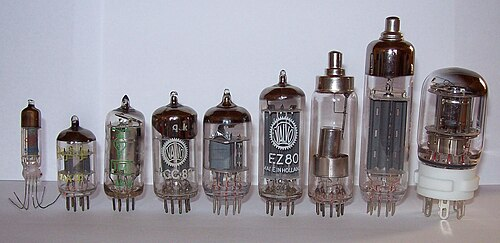
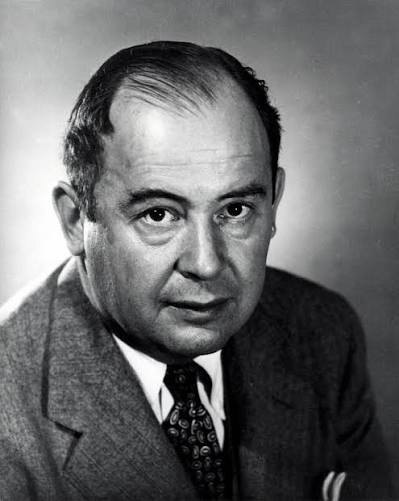
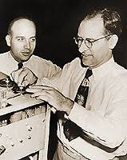
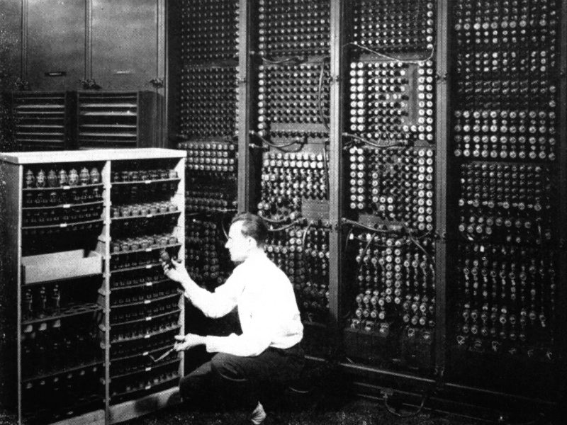
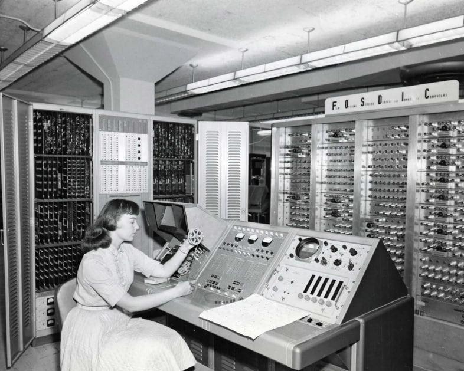
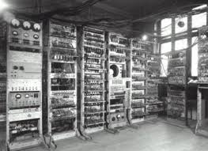

Головна
Головна
Головна
Головна
Перше покоління комп’ютерів (приблизно 1940–1956 роки) стало фундаментальним етапом у розвитку обчислювальної техніки. Саме в цей період людство перейшло від механічних і електромеханічних пристроїв до повністю електронних машин, що використовували вакуумні лампи як основний елемент обробки інформації.
Ці комп’ютери були першими пристроями, які могли виконувати складні обчислення автоматично, без участі людини на кожному кроці. Вони ще не були універсальними у сучасному розумінні, але вже закладали основу архітектури цифрових систем.
Основна ідея цього покоління полягала в автоматизації обчислень для наукових, військових та інженерних задач, які раніше вимагали тривалих ручних розрахунків.
Формування першого покоління комп’ютерів відбулося на тлі Другої світової війни та стрімкого розвитку науки і техніки у 1940-х роках. Військові потреби стали головним стимулом для створення перших електронних обчислювальних машин.
Зокрема, виникла необхідність у швидких розрахунках балістичних траєкторій, шифруванні та дешифруванні повідомлень, а також у моделюванні складних фізичних процесів. Ручні обчислення займали надто багато часу і були схильні до помилок.
Після завершення війни технології не зупинилися у військовій сфері. Навпаки, вони почали активно застосовуватися в науці, промисловості та державному управлінні. Саме в цей час формується концепція універсального комп’ютера, здатного виконувати будь-які алгоритми.
Важливу роль у розвитку теоретичної бази відіграла архітектура фон Неймана, яка запропонувала ідею збереження програми в пам’яті комп’ютера разом із даними. Цей принцип став основою майже всіх сучасних обчислювальних систем.
Основним технологічним компонентом першого покоління комп’ютерів були вакуумні лампи. Це електронні прилади, які керували потоком електронів у вакуумі та виконували функції перемикачів і підсилювачів електричних сигналів.

Кожна логічна операція в комп’ютері вимагала великої кількості таких ламп. У великих системах їх кількість могла досягати десятків тисяч, що значно впливало на розміри та енергоспоживання пристроїв.
Незважаючи на революційність технології, вона мала суттєві недоліки: лампи сильно нагрівалися, часто виходили з ладу та вимагали постійного технічного обслуговування. Це робило комп’ютери дорогими та ненадійними в експлуатації.
Через це перші комп’ютери займали великі приміщення, потребували спеціальних систем охолодження та працювали нестабільно при тривалому навантаженні.
Створив теоретичну модель комп’ютера та заклав основи інформатики.

Запропонував архітектуру комп’ютера із збереженням програми в пам’яті.

Створили ENIAC — один із перших електронних комп’ютерів.
ENIAC (Electronic Numerical Integrator and Computer) вважається одним із перших повноцінних електронних комп’ютерів загального призначення. Він був розроблений для армії США з метою виконання складних балістичних розрахунків.
Машина містила понад 17 000 вакуумних ламп і займала величезну площу, порівнянну з великим залом або кількома кімнатами. Її маса становила близько 27 тонн. ENIAC міг виконувати тисячі операцій за секунду, що для того часу було проривом.
Програмування здійснювалося вручну шляхом підключення кабелів і перемикання тумблерів, що могло займати години або навіть дні.

UNIVAC I став першим комерційним комп’ютером, доступним для цивільного використання. Він був розроблений для обробки великих масивів інформації та застосовувався у бізнесі, урядових установах і наукових організаціях.
Однією з його особливостей стало використання магнітних стрічок для зберігання даних, що значно спростило роботу з інформацією порівняно з перфокартами.
UNIVAC також увійшов в історію як перша машина, яка використовувалася для прогнозування результатів виборів у США, демонструючи потенціал обчислювальної техніки у суспільстві.

EDVAC (Electronic Discrete Variable Automatic Computer) став важливим кроком у розвитку архітектури комп’ютерів. Його головною інновацією була концепція збереженої програми.
Це означало, що інструкції та дані зберігаються в одній пам’яті, що дозволяло значно спростити процес програмування та зробило можливим створення сучасних універсальних комп’ютерів.

У першому поколінні комп’ютерів програмування було надзвичайно складним і вимагало глибокого розуміння апаратної архітектури машини. Єдиною доступною мовою був машинний код, що складався з послідовностей нулів і одиниць.
Програмісти змушені були вручну записувати інструкції, які відповідали конкретним операціям процесора. Помилка в одному символі могла повністю зруйнувати роботу програми.
Введення програм здійснювалося через перфокарти або механічні перемикачі. Процес підготовки міг займати значно більше часу, ніж саме виконання обчислень.
Саме в цей період формується професія програміста як окремий напрямок діяльності, хоча тоді вона більше нагадувала інженерію електронних систем, ніж сучасну розробку ПЗ.
Перше покоління комп’ютерів стало критично важливим етапом у розвитку цифрової епохи. Попри всі технічні обмеження, саме воно довело можливість автоматичних електронних обчислень і заклало фундамент для транзисторів, інтегральних схем і сучасних комп’ютерних систем.
Його значення полягає не в ефективності, а в революційності самої ідеї — створенні машини, яка може виконувати логічні операції швидше за людину.